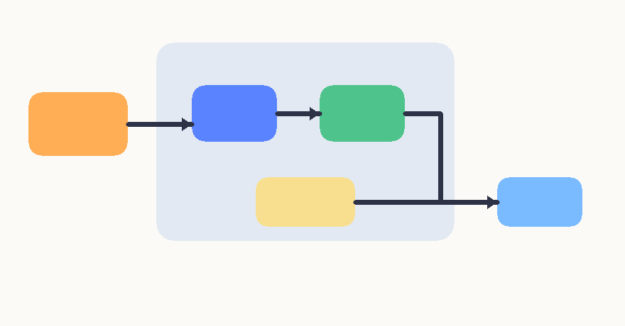

Input PNG

nested-demo-inputProfile: real | Score: - | Passed: -

| Kind | Count |
|---|---|
arrow | 1 |
polyline | 1 |
rectangle | 5 |
region | 3 |
| Kind | Count |
|---|---|
flows_to | 1 |
group_with | 4 |
labels | 6 |
linked_to | 1 |
No checks available.
Nested/group regression sample covering container regions, internal nodes, and connector disambiguation.